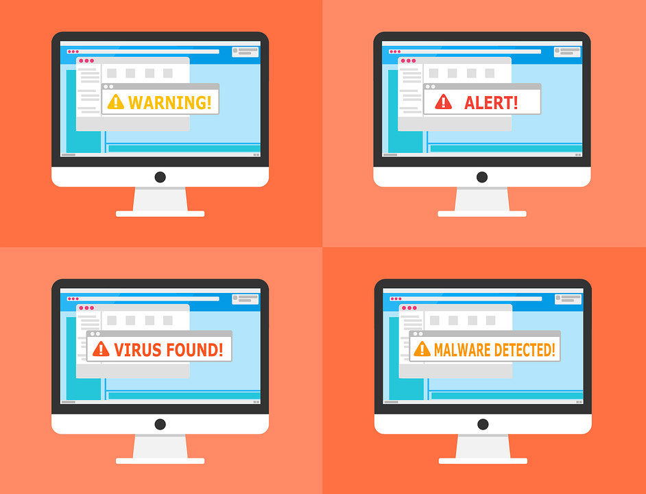

CTF入门指南 | 内附教程分享
如何入门？如何组队？
capture the flag 夺旗比赛
类型：
Web
密码学
Pwn 程序的逻辑分析，漏洞利用windows、linux、小型机等
Misc 杂项，隐写，数据还原，脑洞、社会工程、与信息安全相关的大数据
reverse 逆向Windows、Linux类
ppc 编程类的
国内外著名比赛
国外：DEFCON资格赛
国内：xctf联赛 0ctf上海国内外都有，很强
入门需要哪些基础：
1.编程语言基础（C、汇编、脚本语言）
2.数学基础（算法、密码学）
3.脑洞大开（天马行空的想象、推理解密）
4.体力耐力（通宵熬夜）
如何入门学
1.恶补基础知识
2.尝试从脑洞开始 如黑客game
3.从基础题出发 一般都是100，200，最高分在500，600 先把100分的学好，可从实践，高中的ctf学起，比较简单，只涉及1，2个点
4.学信息安全专业知识
5.锻炼体力耐力 周六日都有比赛
到底如何学？
1.分析赛题情况
2.分析自身能力 自己最适合哪个方向
3.选择更适合的入手
分析赛题
PWN、Reverse偏重对汇编、逆向的理解 对底层理解
Crypto偏重对数学、算法的深入学习 密码课要深入学
Web偏重对技巧沉淀、快速搜索能力的挑战 发散思维，对底层只需要了解，代码原理，关于漏洞点的积累
Misc则更复杂，所有与计算机安全挑战有关的都在其中 隐写，图片数据分析还原，流量，大数据，对游戏分析逆向
常规做法：
A方向：PWN+Reverse+Crypto随机搭配
B方向：Web+Misc组合
Misc所有人都可以做
入门知识：
都要学的内容：Windows基础、Linux基础、计算机组成原理、操作系统原理、网络协议分析
A方向：IDA工具使用（fs插件）、逆向工程、密码学、缓冲区溢出等
B方向：Web安全、网络安全、内网渗透、数据库安全等 前10的安全漏洞
推荐书：
A方向：
RE for Beginners
IDA Pro权威指南
揭秘家庭路由器0day漏洞挖掘技术
自己定操作系统
黑客攻防技术宝典：系统实战篇 有各种系统的逆向讲解
B方向：
Web应用安全权威指南 最推荐小白，宏观web安全
Web前端黑客技术揭秘
黑客秘籍——渗透测试实用指南
黑客攻防技术宝典 web实战篇 web安全的所有核心基础点，有挑战性，最常规，最全，学好会直线上升
代码审计：企业级web代码安全架构
刷题入门----从基础题目出发（推荐资源）：
http://ctf.idf.cn IDF实验室，题目非常基础（推荐）
http://www.ichunqiu.com i春秋 有线下决赛题目复现（推荐）
http://www.wechall.net/challs 非常入门的国外ctf题库（推荐）
http://canyouhack.it
http://oj.xctf.org.cn/xctf
www.wechall.net/challs !!!!!!非常入门的国外ctf题库，很多国内都是从这里刷题成长起来的
http://canyouhack.it/ 国外，入门，有移动安全
https://microcorruption.com/login A方向 密码，逆向酷炫游戏代
http：//smashthestack.org A方向，简洁，国外，wargames，过关
http://overthewire.ofg/wargames/ ！！！！推荐A方向 国内资料多，老牌wargame
https：//exploit-exercises.com A方向 老牌wargame，国内资料多
http://pawnable.kr/play.php pwn类游乐场，不到100题
http://ctf.moonsoscom/pentest/index.php B方向 米安的Web漏洞靶场，基础，核心知识点
http：//prompt.ml/0 B方向 国外的xss测试
http://redtiger.labs.overthewire.org/ B方向 国外sql注入挑战网站，10关，过关的形式 不同的注入，循序渐近地练习
工具：
https://github.com/truongkma/ctf-tools
https://github.com/Plkachu/v0lt
https://github.com/zardus/ctf-tools
https://github.com/TUCTF/Tools
学习入门--以练促赛，以赛养练
以练促赛：选择一场已经存在Writeup的比赛
以赛养练：参加一场最新CTF比赛
总结解题过程，分析出题人想法
参加一场最新的ctf比赛
https：//ctftime.org/ 国际比赛，有很多基础的
http：//www.xctf.org.cn/ 国内比赛，比较难
组建团队---强力成员画像
1.思维跳跃：灵活性，不会钻墙脚
2.专注：遇到问题不放弃直到解决
3.耐力：连续一天研究技术
4.团队精神：责任、凝聚、分享
有3条为强力成员，有4条会成为强力队长！
组队问题：
新人招募、队员培养、梯队有序、纪律严格
推荐阅读：
CTF入门
https://blog.csdn.net/chaoyueziji123/article/details/48790331
学习安卓逆向过程中做的一些安卓逆向相关的CTF题目以及写的题解
https://github.com/wnagzihxa1n/CTF-Mobile
在学习CTF、网络安全路上整合自己博客和一些资料，持续更新~
https://github.com/q1271964185/Cyberspace_Security_Learning
CTF、C++ STL等内容学习笔记
https://github.com/WangQiuChenChen/CTF

一套CTF基础+解题视频
链接：https://pan.baidu.com/s/1_h7C8Zh0v4JpfIFjoJZ55g
提取码：z35j
铁人三项训练营
链接：https://pan.baidu.com/s/1d4I39-eQkdFuq4mPTGowGA
提取码：n7he
CTF常见例题学习
链接：https://pan.baidu.com/s/1EsVqhzfxA1rN4ENfUZ5uvQ
提取码：v3sr
CTF工具合集
链接：https://pan.baidu.com/s/1Bp9EfzGRJmNiPjRN_qzkmQ
提取码：oxpz
CTF特训班
链接：https://pan.baidu.com/s/1LYbGCeM_B4UIIdVIy1W_JA
提取码：8jct
参考来源：
i春秋CTF入门指南&Github部分资料
以及课程资料整理来自互联网
如有侵权，联系删除